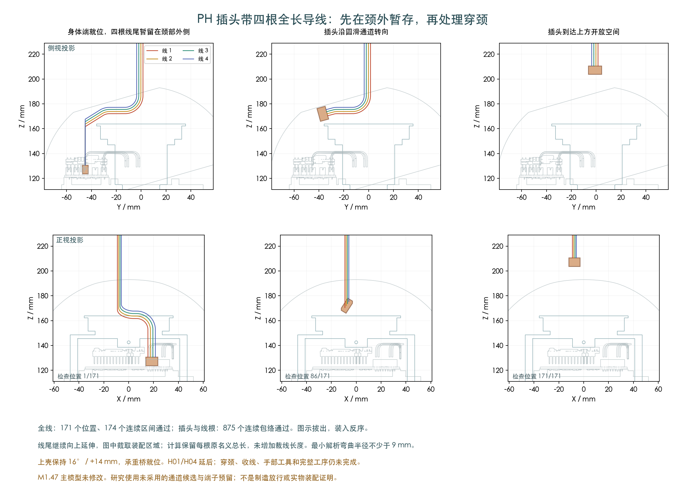

171 个全线位置 · 174 个全线连续区间 · 875 个插头与线根扫掠包络
四根自由线尾先留在颈部外侧，插头沿圆滑通道转向。图示拔出，装入按反序；随后还须穿颈和收线。

四根原名义总长为 287.29、327.86、285.09、339.61 mm。0.6604mm线外径、0.3mm间隙保持；新路径的解析弯曲半径不小于9mm。尾部覆盖范围只是验证用的并集，不是额外裁线长度。
最初8mm插合段保留自身原生插座的有限重叠例外。PH完整预留、自由端子外形及真实压接仍有资料限制，不能视为实物插合合格。
上壳16° / +14mm，承重桥就位。H02/H03共4根身体线和24个其他插头空间保留；H01/H04的10根线和4个插头延后。研究使用此前记录的未采用通道候选，主模型M1.47未改。
旧顺序把线尾先穿入颈部，五种抬升方案都在初始动作中碰到桥/轴承间隙问题；失败记录保留。
供应商按图制作已经确定。公开的JST PH、JST SH资料及逐料号工艺记录继续作为来源；未公开尺寸和实际工艺组合仍需确认。本页不是制造放行。